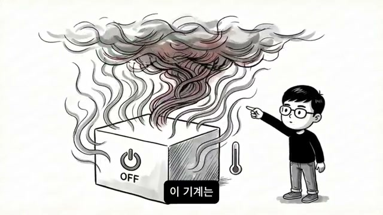
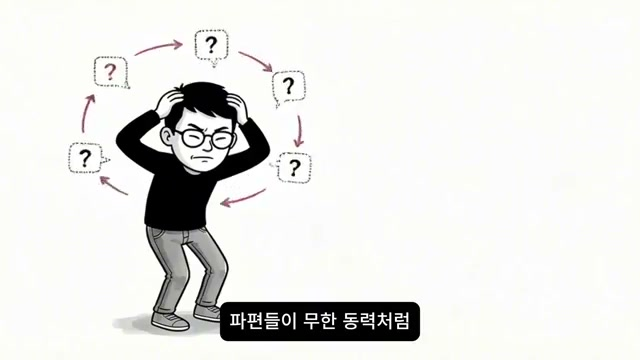
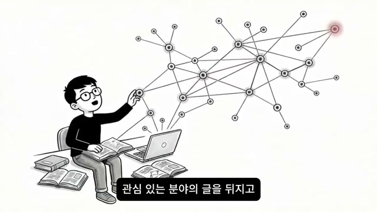
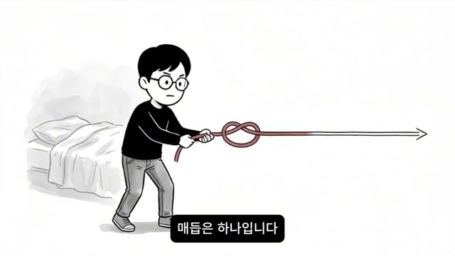
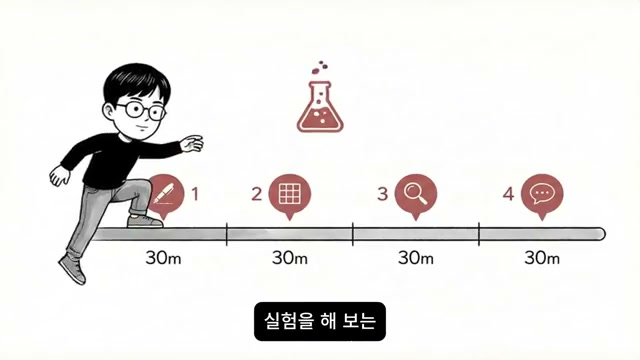

채널: 레디포그로스 (Ready For Growth) | 길이: 17:53 | 날짜: 2026년 3월 18일
핵심 내용
- 영상은 금요일 퇴근 후 “이번 주말엔 아무것도 안 하고 잠만 잘 거야”라고 다짐하는 인물의 장면에서 출발한다. 발표자는 이 장면을 통해 많은 사람이 휴식을 “정지”나 “전원 OFF”로 이해한다는 점을 짚는다. 그러나 영상은 바로 그 전제가 문제라고 말한다. 쉬는 방식이 틀렸기 때문에 주말이 끝날수록 오히려 더 무거워지고 월요일이 더 두려워진다는 것이다.
- 첫 번째 문제 진단은 “분명히 쉬었는데 더 지친다”는 역설이다. 잠도 자고 억지로 몸을 움직이지도 않았는데 몸은 더 무겁고, 배터리는 빨간불인데 충전기를 꽂아도 숫자가 오르지 않는 고장 난 기계 같은 상태가 된다고 묘사한다. 입은 마르고 마음은 가라앉으며, 햇살이 거실을 지나가고 방 안 공기는 정체되지만 자신은 전혀 회복되지 않는다. 외부의 웃음소리와 활기찬 주말 계획은 오히려 자기 방을 더 깊은 수렁처럼 느끼게 만든다.
- 영상은 이 상태가 곧 자기비난으로 이어진다고 설명한다. “나는 왜 휴식조차 제대로 못할까”, “나는 왜 이렇게 의지가 약할까”라는 질문이 밀려오고, 해가 지는 장면은 ‘시간이 손가락 사이로 빠져나가는’ 모래 비유로 표현된다. 특히 일요일 밤이 되면 방전감, 죄책감, 월요일 공포가 동시에 정점에 이른다. 푹 쉬었으면 조금은 기대되어야 할 월요일이 공포영화보다 더 무섭게 느껴지는 상태가 바로 영상이 말하는 핵심 문제 상황이다.
- 발표자는 이 문제를 의지력 부족으로 해석하는 프레임을 강하게 부정한다. 화면에는
WILLPOWER가 붉은 X로 지워지고, 이어서 “당신이 나약해서 그런 것이 아니다”라는 메시지가 나온다. 원인은 의지력이 아니라 “내 뇌가 어떤 방식으로 충전되는지 아직 몰랐기 때문”이라고 정리된다. 특히 INFP, INTJ, INTP, INFJ처럼 영상이 묶어 부르는IN 성향사람들은 남들과 똑같이 ‘아무것도 안 하는 휴식’을 했을 때 오히려 더 피곤해질 수 있다고 말한다. - 이 설명을 위해 영상은 뇌를 ‘고성능 기계’에 비유한다. 전원을 꺼버리면 자동으로 충전되는 것이 아니라, 오히려 냉각팬이 멈추면서 내부의 열기가 빠져나가지 못해 더 뜨거워지고 시스템 전체를 망가뜨릴 수 있다고 설명한다. 따라서 지금 필요한 것은 완전한 정지가 아니라 “내게 맞는 주파수의 충전 포트”를 찾는 일이다. 이 비유는 이후 전개되는 모든 설명의 중심축이 된다.
- 뇌과학 비유로는
디폴트 모드 네트워크(DMN)가 등장한다. 보통 사람은 멍하니 있을 때 뇌가 쉬면서 에너지를 아끼지만, 영상 속 설명에 따르면 생각이 깊고 복잡하게 돌아가는IN 성향일수록 멍한 상태에서 DMN이 오히려 더 바쁘게 작동한다. 그러면 뇌는 지난주 상사의 한마디, 3년 전의 사소한 실수, 미래에 대한 막연한 불안 같은 파일을 한꺼번에 열어 과잉 분석을 시작한다. 즉 “아무것도 안 하는 휴식”은 겉으로는 가만히 누워 있는 상태지만, 속으로는 가장 가혹한 잔업을 시키는 셈이라는 것이다. - 영상은 여기서 “범용 충전기”와 “전용 케이블” 비유를 꺼낸다. 세상이 말하는 보편적 쉼은 모든 사람에게 맞는 것처럼 보이지만, 실제로는 스마트폰 단자가 기종마다 다르듯 뇌가 반응하는 충전 단자도 사람마다 다르다고 주장한다. 지금까지 많은 사람들이 남들이 좋다고 하는 휴식을 자신의 뇌에 억지로 끼워 맞추려 했고, 그 결과 전기는 흐르지 않고 열만 나며 연결 부위만 헐거워졌다고 해석한다. 이 지점에서 영상은 같은
IN안에서도 세부 규격이 다르며, 겉보기엔 같은 소파에 앉아 쉬는 것처럼 보여도 내부 프로세스는 네 갈래로 갈라진다고 말한다. - 첫 번째 포트는
의미의 규격이며, 주로 INFP 성향에서 강하게 나타날 가능성이 높다고 설명한다. 이 유형은 감정이라는 데이터가 정리되지 않은 채 얽혀 있으면 시스템이 멈추지 않는다. 그래서 침대에 누워 있어도 “그 사람은 왜 그런 말을 했을까”, “나는 왜 이것밖에 못할까” 같은 감정 파편이 무한 동력처럼 돌고, 이를 멈추기 위해서는 감정을 한 줄의 문장으로 꿰는 글쓰기나 일기 쓰기가 필요하다. 발표자는 이때의 쓰기를 노동이 아니라 가장 강력한 급속 충전으로 규정한다. - 두 번째 포트는
질서의 규격이며, 주로 INTJ 성향과 연결해 설명된다. 이 유형의 뇌는 무질서를 휴식으로 받아들이지 못하기 때문에 방이 어지럽거나 다음 주 계획이 머릿속에 구조화되어 있지 않으면 효율이 급격히 떨어진다. 가만히 누워 있으면 불안이 에너지를 계속 갉아먹고, 오히려 주변 환경을 정리하거나 미뤄둔 프로젝트의 구조를 짜거나 복잡한 퍼즐을 맞추는 과정에서 안정과 충전이 시작된다. 즉 이 사람에게 진짜 휴식은 ‘멈춤’이 아니라 ‘전략적인 몰입’이다. - 세 번째 포트는
탐색의 규격이며, 주로 INTP 성향과 연결된다. 이 유형의 뇌는 지적 호기심이라는 연료가 끊기면 금세 녹슬기 때문에, 침대에 누워 아무 영상이나 틀어놓는 것은 휴식이 아니라 시각정보 과부하에 가깝다. 반대로 새로운 지식의 조각을 발견하고 그것들을 연결해 자기만의 논리를 만들어 갈 때 가장 강하게 충전된다고 말한다. 관심 분야의 글을 뒤지고, 새로운 기술을 시험해 보고, 우주의 원리를 검색하는 행동이 남들에게는 피곤해 보일 수 있어도 당사자에게는 가장 순도 높은 휴식이 될 수 있다는 주장이다. - 네 번째 포트는
통찰 혹은 연결의 규격이며, 주로 INFJ 성향과 연결된다. 이 유형은 혼자 있는 시간이 필요하지만 그 고독이 어느 순간 세상과의 단절로 느껴질 때 에너지가 급격히 바닥나며, “아무도 나를 이해하지 못한다”는 감각이 가장 큰 피로가 된다고 설명한다. 따라서 마음이 통하는 단 한 사람과의 깊은 대화, 삶의 본질을 건드리는 통찰의 교환, 나를 확장시켜 주는 고전 읽기, 누군가를 진심으로 이해하거나 선한 영향력을 주는 경험이 충전원이 된다. 발표자는 이런 순간 내면에 “조용히 파란 불이 켜진다”고 표현한다. - 후반부에서 영상은 이 네 포트를 자가실험으로 판별하자고 제안한다. 준비물은 거창하지 않고, 주말 동안 네 가지 30분 실험을 해 본 뒤 각 활동 후 배터리가 얼마나 차오르는지 1점에서 10점 사이로 점수 매기면 된다고 설명한다. 실험은 1) 의미 정렬 글쓰기, 2) 무질서에 짧게 질서 부여하기, 3) 사소한 호기심을 따라 깊이 파고들기, 4) 한 사람과 진짜 이야기를 나누기다. 마지막 결론은 “당신은 고장 난 게 아니라 방법이 맞지 않았을 뿐”이며, 동시에 영상 말미에서 이 설명은 심리학·뇌과학 메커니즘을 빌린 인지구조 분석일 뿐 의료적 진단이나 전문 심리치료를 대체하지 않는다고 선을 긋는다.
상세 분석
1. 금요일 저녁의 휴식 선언과 즉각적인 방전 비유


영상의 출발점은 금요일 퇴근길의 무거운 가방, 현관문을 열자마자 가방을 바닥에 던지고 소파로 몸을 묻는 장면이다. 발표자는 “이번 주말엔 진짜 손가락 하나 안 까딱하겠다”는 결심을 노트북 전원을 끄듯 뇌의 전원도 완전히 내려버리고 싶은 욕구로 연결한다. 이어지는 스크린샷은 침대 위 인물 머리 위에 빨간 전원 아이콘과 OFF 말풍선을 배치해 이 정지 욕망을 상징하고, 다음 화면에서는 거대한 스마트폰 배터리 3%, 충전 케이블, 쪼그려 앉은 인물을 통해 ‘쉬어도 충전되지 않는 상태’를 시각화한다. 자막은 “분명히 쉬었는데 몸은 더 무겁고, 배터리는 빨간불인데 숫자가 올라가지 않는다”는 역설을 전개하며, 가슴 한구석이 서늘해지는 순간까지 감정선을 밀어 올린다.
2. 토요일의 침잠, 방 안 공기, 모래처럼 빠지는 시간


여기서 영상은 “쉬는 게 원래 사람을 이렇게 무기력하게 만드는 일이었나”라는 질문으로 전환한다. 햇살이 창밖에서 방 안으로 길게 들어오고, 침대 시트가 체온 때문에 눅눅해졌으며, 방 안 공기가 정체된 물처럼 탁하게 느껴진다는 묘사는 외부 시간은 흐르는데 내부 시간은 멈춘 듯한 감각을 만든다. 스크린샷 segment_002는 사선으로 들어오는 햇빛, 침대 위에 반듯이 누운 인물, 시트와 주변 공기의 열기를 표시하는 선으로 이 답답함을 시각화하고, segment_003은 거대한 모래시계 옆에서 시간을 붙잡지 못하는 인물을 보여주며 “시간이 손가락 사이로 빠져나간다”는 문장을 거의 그대로 그림으로 번역한다. 이 구간의 핵심은 휴식 실패가 단순 피곤함이 아니라, 자기 방이 점점 더 깊은 수렁이 되는 감각으로 변한다는 데 있다.
3. 일요일 밤 공포와 ‘의지력’ 프레임의 폐기


일요일 밤에 이르면 영상은 감정의 강도를 가장 크게 끌어올린다. 침대에 누운 채 천장을 바라보는데 내일 아침 알람이 아직 울리지도 않았는데 벌써 귀를 때리는 것 같고, 이번 주말을 통째로 날려버렸다는 죄책감이 거대한 파도처럼 밀려온다고 말한다. segment_004는 침대 끝으로 밀려오는 검은 파도와 작게 배치된 알람시계로 이 월요 공포를 직접 형상화하며, 자막은 “월요일은 공포영화보다 무섭다”고 못 박는다. 이어 segment_005에서 WILLPOWER가 붉은 X로 지워지는 장면과 물음표는 이 문제를 ‘의지력 부족’으로 해석하면 출구를 찾을 수 없다는 선언이며, 발표자는 곧바로 “나약해서가 아니라 충전 방식을 몰랐을 뿐”이라고 프레임을 갈아치운다.
4. 뇌는 전원을 끄면 회복되는 단순 기계가 아니라는 주장

이 구간에서 발표자는 오늘 하려는 일이 정답 암기가 아니라 자기 뇌에 맞는 방향을 찾는 실험이라고 밝힌다. 비유의 핵심은 “당신의 뇌를 하나의 고성능 기계라고 생각해 보라”는 말인데, 이 기계는 전원을 껐다고 해서 자동으로 충전되지 않으며, 오히려 냉각팬이 멈추면 내부에 쌓인 열기가 빠져나가지 못해 정밀한 부품을 더 뜨겁게 달군다고 설명한다. 스크린샷은 OFF 버튼이 달린 박스에서 검은 연기와 열기가 치솟는 모습을 보여 주고, 온도계 아이콘까지 배치해 ‘정지=회복’이라는 상식을 뒤집는다. 즉 영상의 논리는 “멈추면 낫는다”가 아니라 “잘 맞는 입력을 받아야 식고, 식어야 충전된다”는 방향으로 이동한다.
5. 디폴트 모드 네트워크와 ‘멍하니 있기’의 역효과


발표자는 뇌과학 용어로 디폴트 모드 네트워크(DMN)를 끌어온다. 일반적인 사람은 멍하니 있을 때 뇌가 쉬고 에너지를 아끼지만, 영상이 말하는 IN 성향은 오히려 그 순간 복잡한 연결망이 미친 듯이 돌아가며 수천 개의 파일을 동시에 여는 경향이 있다고 해석한다. segment_007에는 NORMAL이라는 단순 삼각 연결망과 DMN, IN—으로 표시된 복잡한 노드 네트워크가 대비되어 있고, segment_008에는 침대 위 인물 머리 위로 서류, 시계, 화살표가 폭발하듯 솟구쳐 “겉은 정지, 속은 전시상황”이라는 자막의 의미를 강화한다. 그래서 지난주 상사의 한마디, 3년 전 실수, 미래 불안이 한꺼번에 열리며 아무것도 안 하는 휴식이 오히려 가장 가혹한 잔업이 된다는 것이 이 영상의 핵심 설명이다.
6. 범용 충전기의 실패와 네 개의 포트라는 가설


여기서 영상은 스마트폰 충전 단자 비유를 정교하게 확장한다. 사람마다, 특히 비슷한 IN 안에서도 뇌가 반응하는 충전 단자가 다르며, 지금까지는 세상이 말하는 ‘진정한 쉼’이라는 범용 충전기를 자기 뇌에 억지로 꽂으려 했기 때문에 열만 나고 충전은 안 되었을 수 있다고 설명한다. segment_009는 서로 다른 모양의 스마트폰 4대를 하나의 커넥터에 연결하려는 그림으로 이 불일치를 보여 주고, segment_010의 설계도는 이 설명이 사람을 상자에 가두는 진단이 아니라 ‘회로도’를 함께 들여다보는 작업이라는 점을 강조한다. segment_011의 ON과 STOP 대비, 그리고 스파크가 튀는 케이블은 같은 상황에서도 어떤 사람은 전류가 흐르고 어떤 사람은 스파크만 치다 멈춘다는 자막 내용을 그대로 시각화한다.
7. 뇌는 전기를 먹는 배터리가 아니라 입력을 처리하는 프로세서라는 전환


영상은 “당신의 뇌는 단순히 전기를 먹고 사는 배터리가 아니다”라고 선을 긋고, 오히려 끊임없이 데이터를 처리하고 분류해야 직성이 풀리는 고성능 프로세서에 가깝다고 재정의한다. 그래서 진짜 휴식은 입력을 완전히 끊는 것이 아니라, 내 시스템이 가장 편안하게 처리할 수 있는 전용 데이터를 넣어 주는 과정에 가깝다고 주장한다. segment_012에는 INPUT이 칩 내부로 들어가는 그림이 나오고, 이어 segment_013은 네 개의 거울과 각각 다른 아이콘을 통해 이제부터 의미, 질서, 탐색, 연결이라는 네 가지 규격을 차례대로 비춰 보겠다고 예고한다. 이 장면에서 발표자는 첫 번째 거울로 의미의 규격, 그리고 주로 INFP가 여기에 해당할 가능성이 높다고 제시한다.
8. 의미 포트: 감정 파편을 ‘문장’으로 저장해야 충전되는 사람

의미 포트의 핵심은 “감정 데이터를 정리하지 않으면 시스템이 멈추지 않는다”는 문장으로 압축된다. 침대에 누워 있어도 머릿속에서는 왜 그런 말을 했는지, 왜 나는 이것밖에 못하는지 같은 감정의 파편들이 무한 동력처럼 순환하며 뇌를 괴롭힌다고 설명한다. segment_014에서 인물 머리 շուրջ 질문표가 원형으로 돌고 있는 장면은 바로 այդ 무한 루프를 나타내며, 발표자는 이때 필요한 것이 ‘아무것도 안 하기’가 아니라 흩어진 감정 조각을 한 줄의 문장으로 꿰어 내는 일기·글쓰기라고 말한다. 감정이 ‘의미라는 파일’로 저장되는 순간 충전이 시작되며, 이 사람에게 쓰기는 노동이 아니라 가장 강한 급속 충전기라는 결론에 도달한다.
9. 질서 포트: 무질서를 구조로 바꿀 때 회복되는 사람


두 번째 포트는 질서 혹은 전략적 몰입의 규격이며, 영상은 이를 주로 INTJ 성향과 연결한다. 이 유형의 뇌는 어지러운 방, 쌓여 있는 서류, 잡히지 않은 계획, 미완성 프로젝트의 구조를 휴식 상태로 받아들이지 못하기 때문에 가만히 누워 있을수록 불안이 배터리를 갉아먹는다고 설명한다. segment_015에는 흩어진 종이와 시계, 서적이 공중에 부유하는 혼란과 INTJ 라벨, 낮아진 배터리 막대가 함께 나타나고, segment_016에서는 흩어진 블록이 격자로 정렬되면서 충전 막대가 90%까지 차오른다. 발표자는 환경 정리, 프로젝트 구조 설계, 퍼즐 맞추기처럼 “무질서한 것을 하나의 시스템으로 정렬하는 순간” 이 유형의 뇌가 가장 쾌적하게 차오른다고 정리한다.
10. 탐색 포트: 호기심과 지적 연료가 들어와야 살아나는 사람

세 번째 포트는 탐색의 규격이며, 영상은 주로 INTP에게 이 가능성이 크다고 말한다. 이 사람은 지적 호기심이라는 연료가 끊기면 금방 녹슬기 때문에, 침대에 누워 아무 영상이나 틀어 두는 것은 휴식이 아니라 단지 시각정보 과부하에 불과하다고 설명한다. 반대로 새로운 지식 조각을 발견하고 그것들을 연결해 자기만의 논리를 만들어 갈 때 뇌에 불이 들어오는데, segment_017의 책과 노트북, 사방으로 뻗는 노드 네트워크가 바로 그 과정을 보여 준다. 주말 내내 관심 있는 분야를 뒤지고, 새로운 기술을 시험하고, 우주의 원리를 검색하는 일은 남이 보기엔 피곤해 보여도 당사자에게는 회로를 깨끗하게 닦아 주는 가장 순도 높은 휴식이라는 것이 영상의 주장이다.
11. 연결 포트: 깊은 이해와 공명에서 힘을 얻는 사람


마지막 포트는 통찰 혹은 연결의 규격이며, 영상은 이를 주로 INFJ에게서 자주 발견된다고 설명한다. 이 유형은 혼자 있는 시간이 필요하지만, 그 고독이 세상과의 단절로 느껴지는 순간 에너지가 급격히 바닥나고 “아무도 나를 이해하지 못한다”는 감각이 가장 큰 소모가 된다고 말한다. segment_018은 점선 원 안에 고립된 인물과 바깥 사람들을 배치해 이 단절감을 보여 주고, 이어 segment_019는 인물을 네 갈래 길의 중심에 세워 서로 다른 경로가 결국 하나의 자리에 모인다는 뒤이은 논리를 준비한다. 발표자는 겉도는 잡담이 아니라 삶의 본질을 건드리는 깊은 대화, 누군가를 진심으로 이해하는 경험, 고전 읽기 같은 일이 오히려 내면의 파란 불을 켜는 전원선이 된다고 강조한다.
12. 네 갈래의 원인은 달라도 풀어야 할 매듭은 하나

영상은 네 포트를 설명한 뒤 “우리는 고장 난 것이 아니라 내 포트에 맞는 케이블을 찾고 있었을 뿐”이라는 문장으로 내용을 수렴한다. 이유는 감정의 엉킴일 수도 있고, 무질서일 수도 있고, 지루함일 수도 있고, 외로움일 수도 있지만, 결국 모두가 멈춰 서 있던 장소는 같았다는 것이다. segment_020의 매듭을 잡아당기는 장면은 이 결론을 상징하며, 뒤편의 침대는 처음의 무기력한 주말 장면과 직접 연결된다. 발표자가 여기서 제시하는 해법은 거대한 삶의 개혁이 아니라 “내 뇌가 비명을 지르지 않고 받아들일 수 있는 동작 하나”를 찾는 일이다.
13. 추상적 자기비난 대신 네 개의 30분 실험

이후 영상은 매우 실용적인 설계로 넘어간다. 이번 주말에 딱 30분씩 네 가지 실험을 해 보고, 실험 직후 내 배터리가 얼마나 차오르는지 1점에서 10점 사이로 점수 매겨 보라고 제안한다. segment_021은 달리기 시작하는 인물, 위의 플라스크 아이콘, 그리고 1-2-3-4와 각각 30m가 붙은 타임라인으로 실험의 구조를 명확하게 시각화한다. 여기서 가장 중요한 전제는 이 실험이 맞다 틀리다를 가르는 시험이 아니라, 내 뇌가 지금 시점에 가장 강하게 반응하는 휴식 방향을 직접 관찰하는 자가 탐색이라는 점이다.
14. 실험 1~4의 실제 수행법과 반응 판정 기준


첫 번째 실험은 조용한 곳에서 펜을 들고 현재 머릿속을 떠다니는 생각과 감정의 파편을 그대로 종이에 옮기는 의미의 정렬 실험이며, 문법과 맥락은 전혀 신경 쓰지 말고 불안을 문장이라는 실로 하나씩 뽑아내듯 쓰라고 말한다. 두 번째 실험은 책상 위 물건을 재배치하거나 서랍 한 칸, 메모 앱, 다음 주 계획처럼 작은 무질서 하나에 짧게 질서를 부여하는 몰입의 질서 실험으로, 머리가 조금 맑아지고 “이제 좀 할 수 있겠다”는 감각이 들면 질서 포트가 반응한 것이다. 세 번째 실험은 평소 궁금했지만 미뤄 둔 아주 사소한 주제 하나를 골라 키워드 삼아 영상이든 글이든 자료를 따라 깊게 파고드는 탐색의 확장 실험이며, 시작은 가벼웠는데 어느새 눈이 반짝이면 탐색 포트가 열린 것이다. 네 번째 실험은 마음이 통하는 단 한 사람과 30분 동안 요즘 고민이나 최근의 통찰을 진짜로 나눠 보는 연결의 공명 실험으로, 대화 후 혼자 떠 있던 마음이 세상과 다시 연결된 듯 느껴지고 배터리 막대가 올라가는 감각이 들면 연결 포트가 반응한 것으로 해석한다.
15. 방향만 알면 된다: 월요일은 즉시 완벽해지지 않아도 달라질 수 있다


영상의 마지막 메시지는 완벽한 정답을 한 번에 찾지 못해도 괜찮다는 것이다. segment_026의 DIRECTION 화살표처럼 우리에게 필요한 것은 일단 방향이며, 이번 주말 실험에서 점수가 높게 나온 활동을 아주 작게라도 스케줄에 고정하면 조금씩 나만의 리듬을 만들 수 있다고 말한다. segment_027의 MON 표지와 계기판은 월요일 아침의 무게가 단번에 사라지지는 않더라도, 주말에 내 포트에 맞는 입력을 한번이라도 넣어 본 사람은 내부의 감각이 달라질 수 있음을 상징한다. 이어 발표자는 “안 되는 게 아니라 방법이 맞지 않았을 뿐”이라고 다시 강조하고, segment_028의 INFO 화면에서 이 전체 설명이 심리학 및 뇌과학 메커니즘을 바탕으로 한 인지구조 해석이지 특정 개인에 대한 의료 진단이나 전문 심리치료의 대체물이 아니라고 명시한다.
주요 인용 및 발언
“당신의 뇌에 지금 필요한 건 전원을 끄는 게 아닙니다.”
“당신의 뇌는 단순히 전기를 먹고 사는 배터리가 아닙니다.”
“진짜 휴식이란 입력을 완전히 끊는 게 아닙니다.”
“흩어진 감정의 조각들을 한 줄의 문장으로 꿰어내는 일.”
“당신에게 진짜 휴식은 전략적인 몰입입니다.”
“우리는 고장 난 게 아니라 단지 내 포트에 맞는 케이블을 찾고 있었을 뿐입니다.”
“휴식은 멈추는 게 아니라 나에게 맞는 주파수를 맞추는 과정입니다.”
“안 되는 게 아닙니다. 방법이 맞지 않았을 뿐입니다.”
결론 및 시사점
이 영상의 핵심 메시지는 “휴식 실패는 게으름이나 의지 박약의 증거가 아니라, 나와 맞지 않는 입력을 휴식이라고 착각한 결과일 수 있다”는 것이다. 발표자는 MBTI의 IN 계열을 중심으로 의미, 질서, 탐색, 연결이라는 네 가지 충전 포트를 제시하고, 주말의 무기력과 일요일 밤 공포를 설명하는 정서적 서사와 DMN·충전기·포트 비유를 결합해 하나의 자기이해 프레임을 만든다. 실용적 시사점은 분명하다. 막연히 누워 있는 시간을 늘리는 대신, 짧고 구체적인 자기 실험을 통해 어떤 행동이 실제로 내 에너지를 회복시키는지 관찰하고, 점수가 높게 나온 활동을 작게라도 생활 리듬에 고정하라는 것이다. 다만 영상 스스로도 마지막에 밝혔듯, 이는 심리학과 뇌과학의 언어를 빌린 자기탐색용 설명 모델이지 의료적 진단이나 치료를 대신하는 것은 아니며, 심한 우울·불안·기능 저하가 동반된다면 별도의 전문적 도움과 병행해서 받아들여야 한다.
댓글
GitHub 이슈 기반 댓글 시스템입니다.